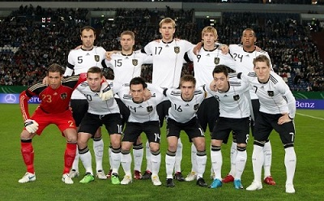
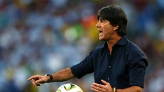

Mundial FIFA - BRASIL 2014
> ALEMANIA

17 PARTICIPACIONES
3 TITULOS
2 RANKING FIFA
LISTA DEFINITIVA
Arqueros
1-Manuel Neuer (Bayern), 12-Ron Robert Zieler (Hannover 96), 22-Roman Weidenfeller (Borussia Dortmund),
Defensas
2-Kevin Grosskreutz (Borussia Dortmund), 3-Matthias Ginter(Friburgo),4-Benedikt Hoewedes (Schalke),
5- Mats Hummels(Borussia Dortmund),15-Erik Durm(Borussia Dortmund), 16-Per Mertesacker (Arsenal),
20-Jerome Boateng(Bayern), 21-Skondran Mustafi (Sampdoria).
Centrocampistas
6-Sami Khedira (Real Madrid),7-Bastian Schweinsteiger (Bayern),8-Mesut Oezil(Arsenal/ING),
14-Julian Draxler (Schalke), 15-Philipp Lahm (Bayern),18-Toni Kroos(Bayern),
22-Christoph Kramer (Borussia Moenchengladbach),
Delanteros
9-Andre Schuerrle (Chelsea),10-Lukas Podolski (Arsenal),11-Miroslav Klose (Lazio),
13-Thomas Mueller(Bayern),19-Mario Goetze (Bayern)
Director Tecnico
Joachim Loew

Joachim Loew, seleccionador de Alemania:"Empezamos este proyecto hace diez años. Lo que ha sucedido hoy es el resultado de muchos años de trabajo,
que comenzaron con Juergen Klinsmann, en los que hemos progresado de forma constante. Creímos en este proyecto, trabajamos muchísimo y,
si algún equipo se lo merece, es éste. Siempre hemos desplegado un buen fútbol y estoy convencido de que, a lo largo de esta fase final,
a lo largo de los siete partidos, hemos ofrecido mejores actuaciones que ningún otro equipo de los que competían aquí en Brasil.
Los muchachos han formado además una camaradería, un espíritu de equipo, absolutamente increíble. Poseen una capacidad técnica fantástica
y la voluntad necesaria para hacer lo que se requiere de ellos en todo momento. Somos la primera selección de Europa que conquista un título en Sudamérica,
y esto nos llena de orgullo. Todos y cada uno de los jugadores de este equipo lo han dado todo. Antes les dije que tenían que entregarse mucho más que nunca,
porque buscaban conseguir algo totalmente nuevo. Sabíamos que necesitaríamos 14 jugadores durante este partido, cada uno de ellos en su mejor forma,
y que todos nuestros hombres debían estar listos. Por suerte, hicimos saltar al terreno de juego a quien era capaz de desequilibrar el encuentro.
[Mario] Goetze es un muchacho milagroso, soberbio. Siempre supe que podía decidir el partido".